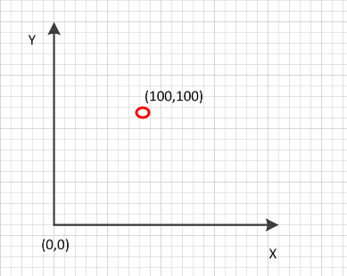
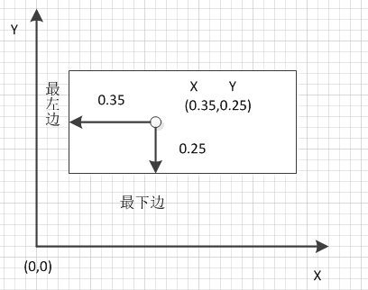
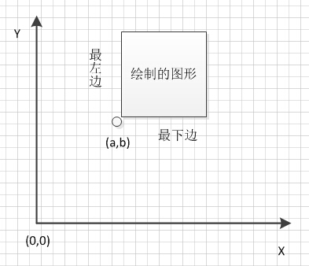
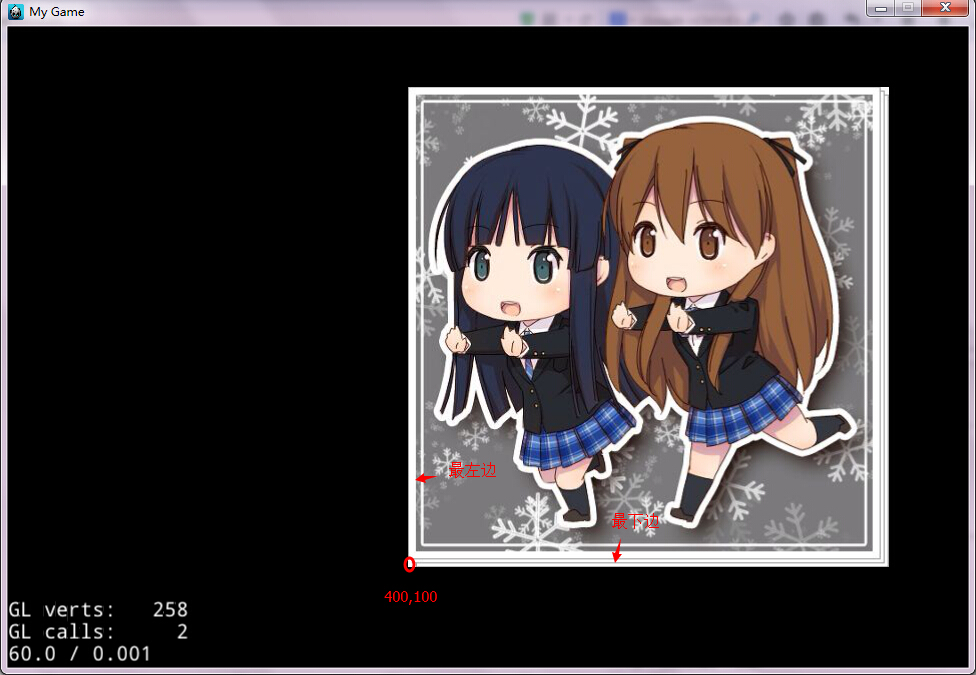
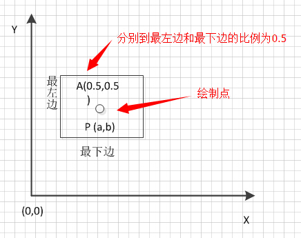
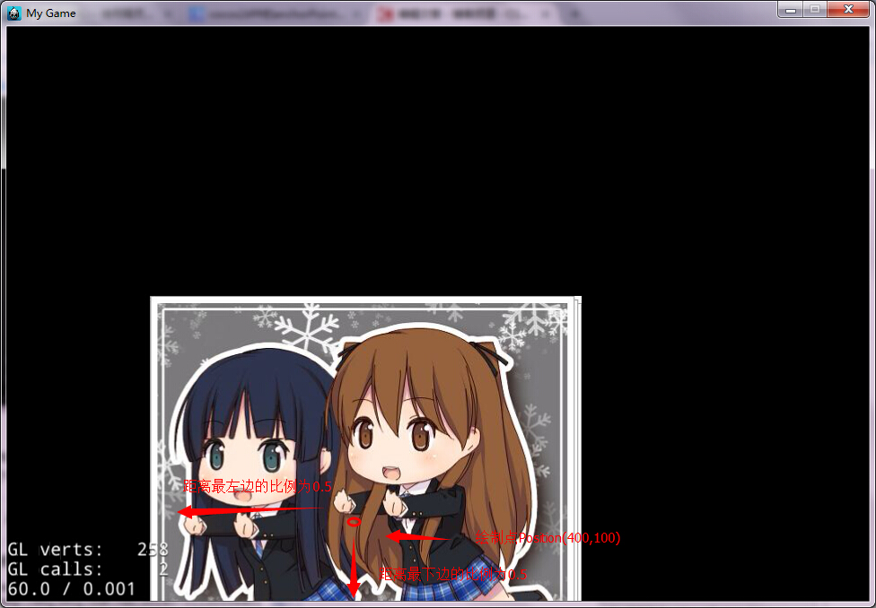
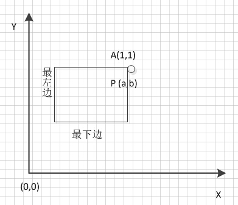
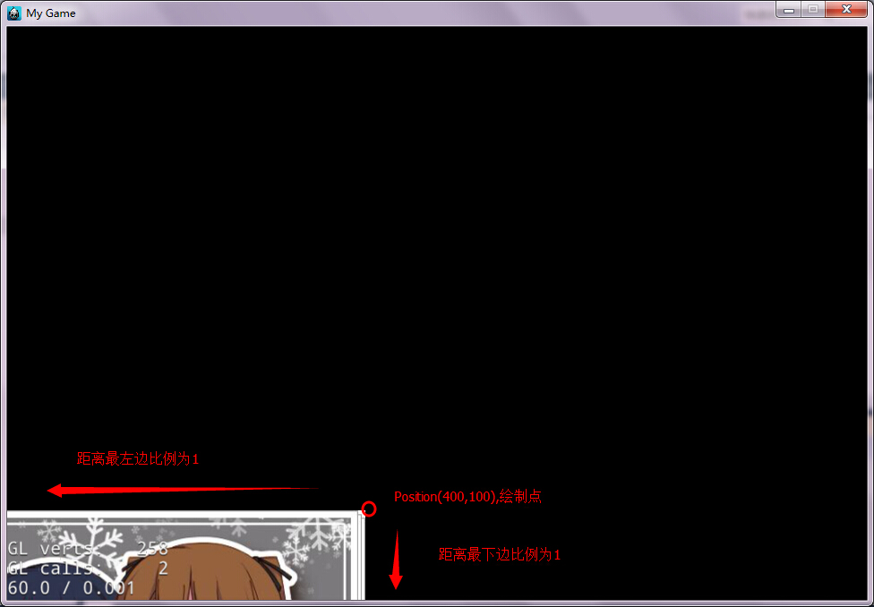

3. Position和AnchorPoint的关系
第一步，我们要知道cocos2d-x中绘图坐标系是以左下角为原点，向上为y轴正方向，向右为x轴正方向。如下图:

第二步，我们要了解AnchorPoint.x和AnchorPoint.y分别是相对于所绘图的最左边width和最下边height的比例，所以AnchorPoint.x和AnchorPoint.y只能在0~1之间取值。
第三步，我们要明确AnchorPoint.x的值是相对于矩形绘图最左边距离的比例，AnchorPoint.y的值是相对于矩形绘图下边距离的比例。如下图：

第四步，当我们设定了精灵的Position(a,b)时，精灵在屏幕上的绘制要参考AnchorPoint的值。这里要假设精灵的Position(a,b)是固定的，所以此时要AnchorPoint为中心来绘制图形。由于AnchorPoint的点和Position的点同一个点，不同的是AnchorPoint点的值是比例值，在第三步中有讲解。所以，绘制图形的思路就是在固定Position点上，根据AnchorPoint不同的比例值，上下左右移动图形来达到比例值，最终得出图形。注意移动x、y的比例分别是相对于最左边和最下边的。
第五步，我们根据AnchorPoint不同比例值给出具体的绘图，这里Position(a,b)是固定的。
1.AnchorPoint(0,0),由于x=0,y=0,那么点到最左边的距离比例为0，点到最下边的距离比例为0，即绘制点在图形的左下角。如下图：

在cocos2d-x代码如代码1，绘制效果如效果1。为了使绘制的图形显示得更具体，我们设置Positon(400,100)。
代码1：
Sprite*testSprite=Sprite::create("1.jpg");
testSprite->setPosition(400,100);
testSprite->setAnchorPoint(Vec2(0,0));
this->addChild(testSprite);
效果1：
2.AnchorPoint(0.5,0.5),由于x=0,y=0,那么点到最左边的距离比例为0.5，点到最下边的距离比例为0.5，即绘制点在图形的中心，如下图：
在cocos2d-x代码如代码2，绘制效果如效果2。为了使绘制的图形显示得更具体，我们设置Positon(400,100)。
代码2：
Sprite*testSprite=Sprite::create("1.jpg");
testSprite->setPosition(400,100);
testSprite->setAnchorPoint(Vec2(0.5,0.5));
this->addChild(testSprite);
效果2：
3.AnchorPoint(1,1),由于x=1,y=1,那么点到最左边的距离比例为1，点到最下边的距离比例为1，即绘制点在图形的右上角，如下图：
在cocos2d-x代码如代码3，绘制效果如效果3。为了使绘制的图形显示得更具体，我们设置Positon(400,100)。
代码3：
Sprite*testSprite=Sprite::create("1.jpg");
testSprite->setPosition(400,100);
testSprite->setAnchorPoint(Vec2(1,1));
this->addChild(testSprite);
效果3：
以上讲解了三种即特殊又普通的比例，相信大家看完后就可以理解Position和AnchorPoint的关系。其他AnchorPoint值的推理如上。